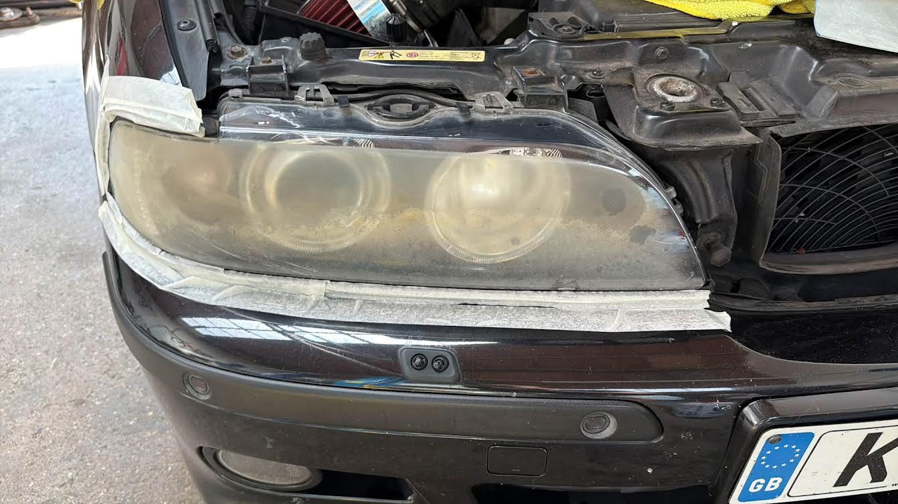
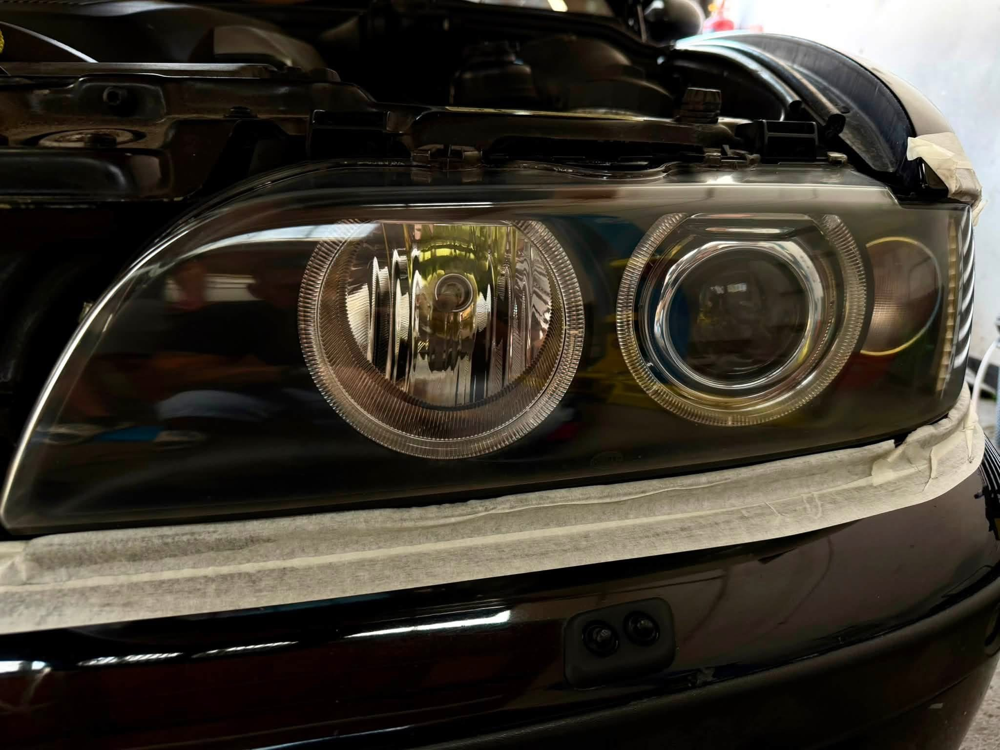
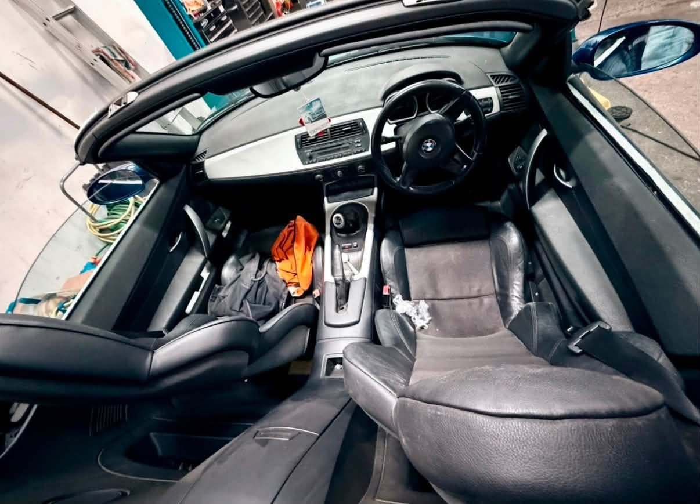
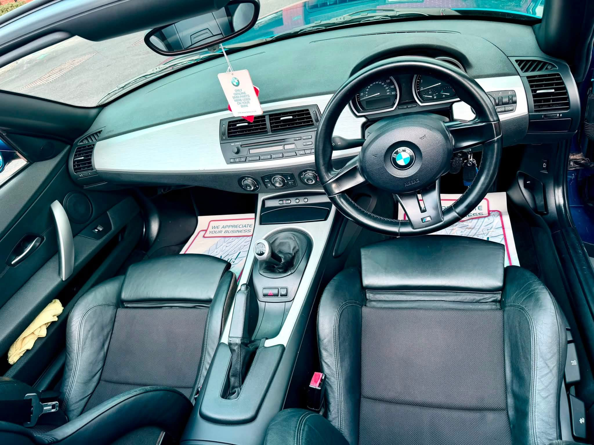
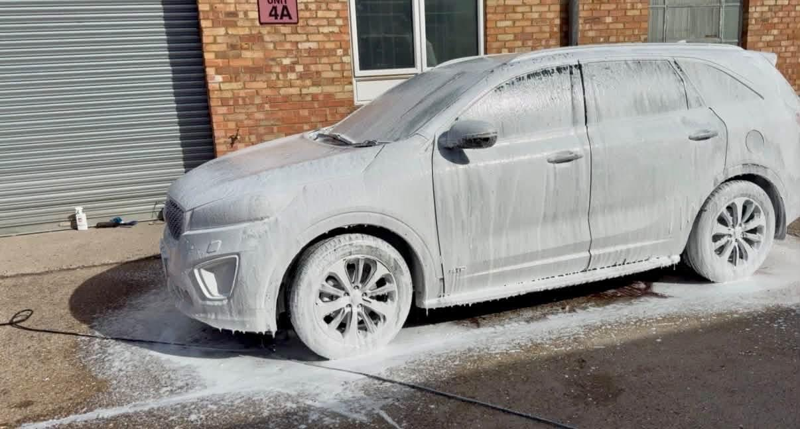
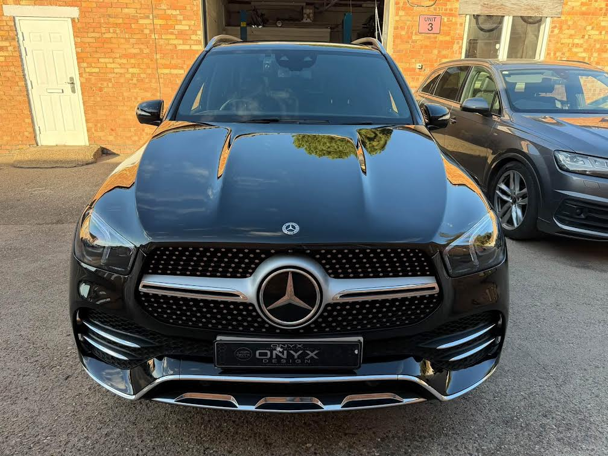
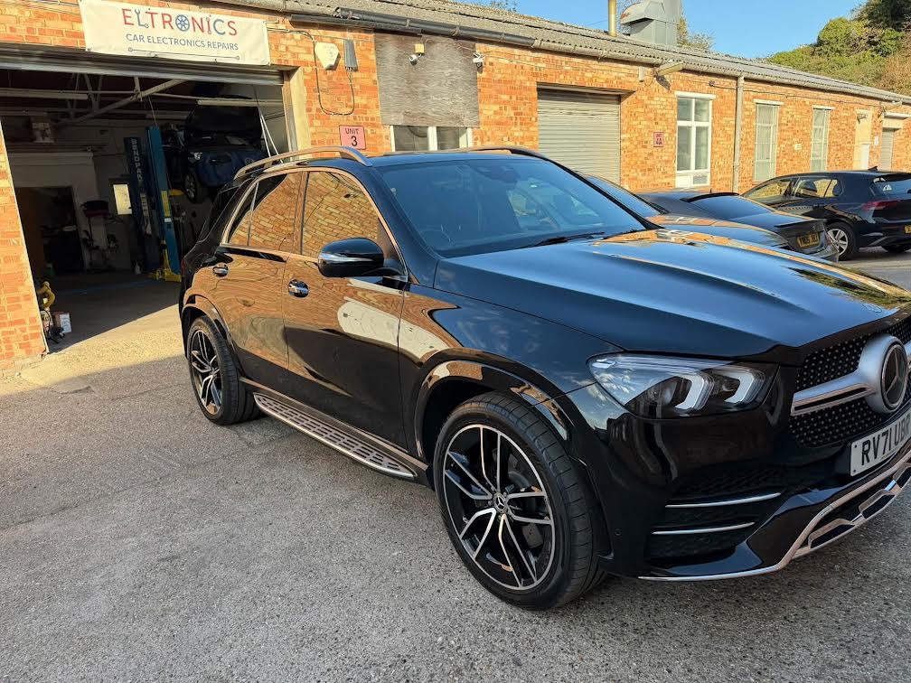
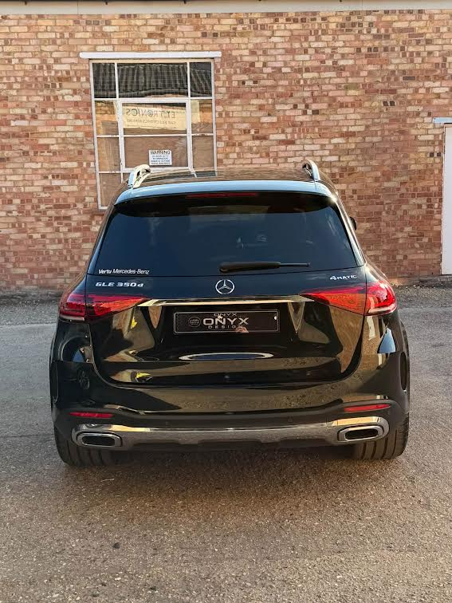
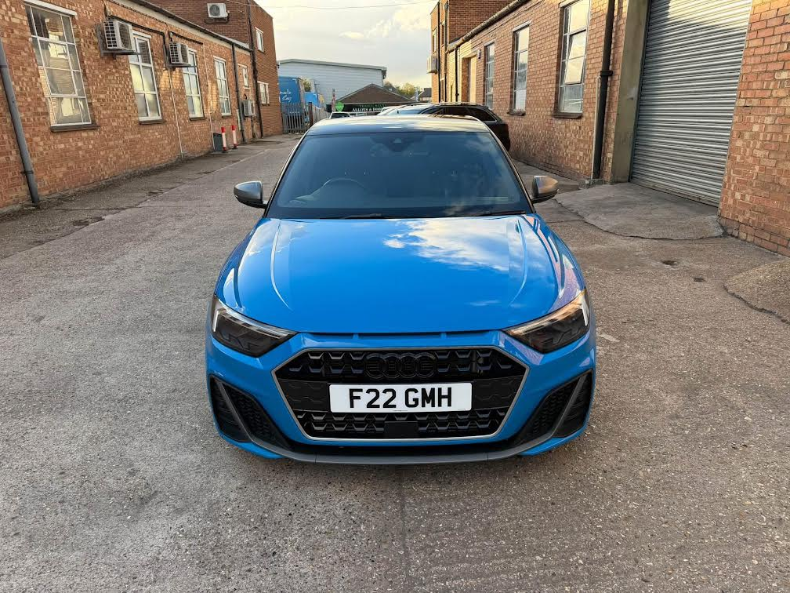
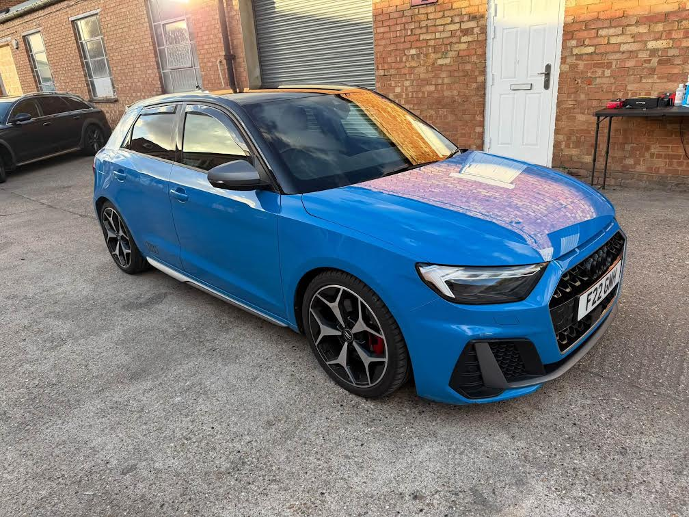

Full valet
Interior and exterior cleaning for a fresh start, bringing attention to the cabin as well as the exterior finish.
Enquire about valeting ↗Reading, UK · Showroom Shine Detailing Studio
Professional detailing for every vehicle. From daily drives to supercars, boats and aircraft — a considered finish, inside and out.
01 / The treatments
From a thorough valet to dedicated surface protection, choose the care your vehicle needs. Contact ONYX Design to discuss preparation, suitability and a tailored quote.
Interior and exterior cleaning for a fresh start, bringing attention to the cabin as well as the exterior finish.
Enquire about valeting ↗Address swirls and scratches with polishing options selected for your paintwork's condition and the finish you want.
Discuss your paintwork ↗Explore 2-year, 3-year and 5-year coating packages for surface protection and gloss. Confirm preparation, aftercare and package terms with the studio.
Explore protection ↗Leather and fabric care to refresh the cabin, with protection options for the surfaces you use every day.
Discuss interior care ↗Dedicated protection treatments for wheels and calipers, with a focus on easier maintenance and brake-dust resistance.
Ask about wheel protection ↗A rain-repellent glass treatment designed to encourage water beading and support easier cleaning. Ask about suitability for your vehicle.
Explore glass coating ↗Dedicated engine bay cleaning and detailing to complete your vehicle's presentation. Discuss suitability before arranging treatment.
Ask the studio ↗02 / Before & after
Explore paired photographs from headlight, interior and exterior work.





03 / Recent work
A closer look at the vehicles in the ONYX Design gallery.





04 / Perfect for every vehicle
Care for the cars you rely on every day, with cleaning and protection options to keep presentation and maintenance in mind.
From premium daily cars to sports cars and supercars, discuss paint correction, gloss and protection suited to your vehicle.
Specialist care for marine surfaces, with treatments advertised for salt, UV and water exposure. Contact ONYX to confirm suitable options.
Specialist aircraft care and surface protection. Discuss your aircraft, its requirements and treatment suitability directly.
Mobile service · Aircraft & boats
Mobile detailing is available for boats and aircraft. Contact ONYX Design to confirm location coverage, access and availability.
05 / The ONYX approach
Detailing. Protection. Perfection. From a full valet to specialist care, start with a conversation about your vehicle and the result you have in mind.
Share its current condition and the services that interest you so the studio can discuss an appropriate treatment and quote.
Plan your detail ↗The design signature
WE PROTECTCare for the finish. Attention to the details.
06 / Surface protection
Explore ceramic coating packages, dedicated wheel protection and Invisible Wiper glass coating. Ask the studio which combination suits your vehicle and how to care for it afterwards.
Discuss a package ↗ONYX advertises 2-year, 3-year and 5-year ceramic coating packages. Confirm preparation, coverage, maintenance requirements and package terms directly with the studio.
A rain-repellent treatment for glass, intended to encourage water beading and easier cleaning. It does not replace normal windscreen wiper use or safe driving practices.
Mobile service is advertised for boats and aircraft. Confirm coverage and availability directly; ask separately about arrangements for cars.
Send your vehicle details and the service you want by WhatsApp or email. Confirm pricing and your appointment directly before travelling.
07 / Your next detail
Tell ONYX what you drive, fly or sail, which treatment interests you and the result you have in mind.
Location: Reading, UK
Opening hours: Always Open
Contact the studio to confirm your appointment and arrangements before visiting.